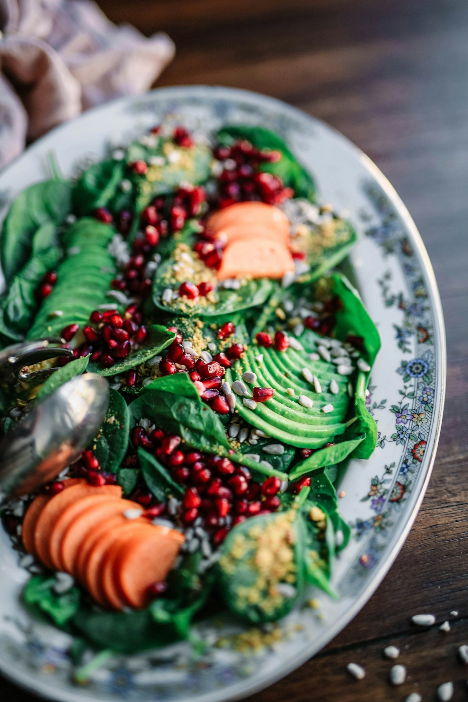

Dein Weg. Dein Tempo.
Gesund abnehmen beginnt mit Verstehen. Wir begleiten dich dabei.
Finde dein
gesundes Gleichgewicht.
Verstehe deinen Körper, setze realistische Ziele und finde Gewohnheiten, die zu deinem Leben passen.
Lerne deinen Körper kennen
✦ Gut für dich. Jeden Tag.Ein guter Anfang für dich
Deine Tools für mehr KlarheitBMI & Idealgewicht
Wo stehst du gerade? Entdecke deinen BMI und deinen gesunden Gewichtsbereich.
Jetzt berechnen DEINE ENERGIEKaloriendefizit-Rechner
Finde heraus, wie viel Energie dein Körper braucht – und was ein moderates Defizit ist.
Bedarf verstehen DEIN WISSENAbnehmen verstehen
Verständliche Antworten und praktische Tipps. Für Veränderungen, die bleiben.
Guides entdeckenDein Einstieg in 3 Schritten
GANZ IN DEINEM TEMPOVerstehe deinen Ausgangspunkt
Deine Werte sind eine Orientierung, kein Urteil.
Finde ein realistisches Ziel
Ein kleines Defizit kann langfristig viel bewirken.
Mach kleine Gewohnheiten groß
Entdecke, was im Alltag wirklich funktioniert.
Fortschritt ist mehr
als eine Zahl
auf der Waage.
Mehr Energie, besserer Schlaf und ein gutes Körpergefühl zählen genauso.
Gut zu wissen. Gut zu dir.Vier Wochen. Kleine Schritte. Mehr Energie.
Entdecke deinen Bewegungsplan für zu Hause.
Wissen, das dich weiterbringt
Alle Guides ansehenMehr als nur eine Zahl.
Berechne deinen BMI und entdecke einen Gewichtsbereich zur Orientierung.
Ein bisschen mehr Klarheit.
Trage deine Daten ein. Hier findest du danach deinen BMI, eine Einordnung und deinen Orientierungsbereich.
Was bedeutet „Idealgewicht“ eigentlich?
Ein einziges perfektes Gewicht gibt es nicht. Calion zeigt den Bereich, der bei Erwachsenen einem BMI von 18,5 bis unter 25 entspricht. Der BMI unterscheidet weder Fett von Muskeln noch berücksichtigt er die Fettverteilung. Alter und Geschlecht ändern die Standard-BMI-Formel nicht. Besonders bei viel Muskelmasse, ab 65 Jahren sowie während Schwangerschaft oder Stillzeit braucht es eine individuelle Einordnung.
Ein kleines Defizit. Ein guter Anfang.
Schätze deinen Energiebedarf und finde einen moderaten Einstieg – ohne tägliches Tracken.
Energie für deinen Alltag.
Dein Körper braucht Energie – auch in Ruhe. Finde heraus, wie Grundumsatz, Bewegung und ein moderates Defizit zusammenhängen.
Eine Schätzung, kein festes Tageslimit
Die Mifflin-St-Jeor-Formel schätzt den Ruheenergiebedarf anhand von Gewicht, Größe, Alter und einer geschlechtsspezifischen Konstante. Die Aktivitätsfaktoren sind grobe Näherungen. Individueller Stoffwechsel, Medikamente, Hormone und Erkrankungen können den tatsächlichen Bedarf verändern. Auch die Spanne beider Formelvarianten ist keine persönliche Validierung. Unter 18 Jahren, bei Untergewicht, Schwangerschaft, Stillzeit oder Essstörungen ist dieser Defizit-Rechner nicht geeignet.
Wissen, das im Alltag hilft.
Keine Wundermittel. Keine Verbote. Ein verständlicher Weg zu gesunden Gewohnheiten.
Du musst das nicht allein schaffen.
Wenn Essen, Gewicht oder Kalorien deine Gedanken bestimmen oder du dich häufig schuldig fühlst, helfen eine ärztliche Praxis oder eine qualifizierte Ernährungsberatung weiter. Abnehmen ist nicht für jeden das richtige Ziel.
Dein erster Bewegungsplan.
Vier Wochen für einen sanften Einstieg zu Hause. Ohne Sprünge, ohne Geräte – mit Platz für Erholung.
Wähle deine Woche
Wiederholen ist ausdrücklich erlaubtDeine Woche im Überblick
Die Wochentage sind Vorschläge. Verschiebe sie passend zu deinem Alltag und lasse mindestens einen Tag zwischen Krafteinheiten frei.
So passt du den Plan an
Steigere nur, wenn sich die aktuelle Woche gut anfühlt und du dich bis zur nächsten Einheit erholt hast. Sonst wiederholst du sie oder machst weniger. Die leichtere Variante zählt genauso. Verpasste Einheiten musst du nicht nachholen.
Ein guter Einstieg ist kein Leistungstest
Bewege dich so locker, dass du in ganzen Sätzen sprechen kannst. Muskelarbeit darf spürbar sein, Schmerzen nicht. Bei stechenden Schmerzen, Schwindel oder ungewöhnlicher Atemnot aufhören; bei Brustschmerzen oder starken Beschwerden medizinische Hilfe holen.
Bevor du loslegst
Dieser allgemeine Plan richtet sich an gesunde Erwachsene und ist keine individuelle Trainings- oder Reha-Empfehlung. Bei Erkrankungen, Verletzungen, Schwangerschaft, nach Operationen oder wenn du unsicher bist, kläre geeignete Bewegung fachlich ab. Nutze eine freie, rutschfeste Fläche und einen stabilen Stuhl ohne Rollen, gegen eine Wand gestellt. Bei Gleichgewichtsproblemen nur mit sicherer Unterstützung trainieren.
Langfristige Orientierung: Die WHO empfiehlt Erwachsenen regelmäßige Ausdauerbewegung und Krafttraining an mindestens zwei Tagen pro Woche. Dieser sanfte Einstiegsplan erreicht noch nicht unbedingt den empfohlenen Gesamtumfang.